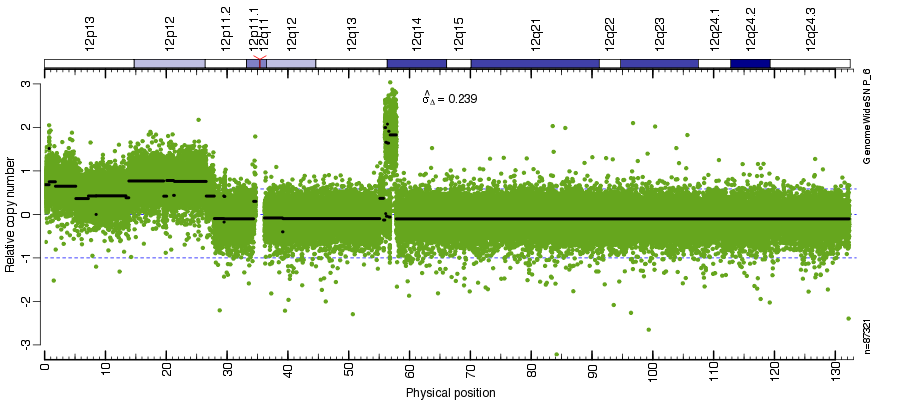

Vignette: Paired total copy-number analysis
Author: Pierre Neuvial
Created on: 2010-08-03
Last updated: 2010-09-24
Setup
If this is your first analysis within the aroma project, please make sure to first read the 'Setup' and 'Definition' pages. This will explain the importance of following a well defined directory structure and file names. Understanding this is important and will save you a lot of time.
Raw data
rawData/
Lee10Lung/
GenomeWideSNP_6/
GSM517071.CEL, GSM517072.CEL
GSE20584/
GenomeWideSNP_6/
GSM517071.CEL, GSM517072.CEL
These GenomeWideSNP_6 CEL files are available from GEO under GSE20584.
Annotation data
Affymetrix provides two different CDF files for the GenomeWideSNP_6 chip type, namely the "default" and "full" CDF. The full CDF contains what the default one does plus more. We are always using the full CDF. If we want to do filtering, we do it afterward.
annotationData/
chipTypes/
GenomeWideSNP_6/
GenomeWideSNP_6,Full.cdf
GenomeWideSNP_6,Full,na26,HB20080821.ugp
GenomeWideSNP_6,Full,na26,HB20080722.ufl
GenomeWideSNP_6,Full,HB20080710.acs
Note that the CDF was renamed from *.Full.cdf to *,Full.cdf (with a comma). The UGP, UFL, and ACS files are special aroma.affymetrix annotation files available from 'GenomeWideSNP_6'. The CDF file is available from Affymetrix inside the "Library Files" (via the same page).
Analysis startup
library("aroma.affymetrix")
verbose <- Arguments$getVerbose(-8, timestamp=TRUE)
# Don't display too many decimals.
options(digits=4)
Preprocessing using CRMA v2
Here we will use the CRMA v2 (Bengtsson, Wirapati, and Speed, 2009) method to estimate copy numbers.
dataSet <- "GSE20584"
chipType <- "GenomeWideSNP_6"
cdf <- AffymetrixCdfFile$byChipType(chipType, tags="Full")
dsList <- doCRMAv2(dataSet, cdf=cdf, combineAlleles=FALSE, verbose=verbose)
dsC <- dsList$total
print(dsC)
This gives
AromaUnitTotalCnBinarySet:
Name: GSE20584
Tags: ACC,ra,-XY,BPN,-XY,AVG,FLN,-XY
Full name: GSE20584,ACC,ra,-XY,BPN,-XY,AVG,FLN,-XY
Number of files: 2
Names: GSM517071, GSM517072 [2]
Path (to the first file): totalAndFracBData/GSE20584,ACC,ra,-XY,BPN,-XY,AVG,FLN,-XY/GenomeWideSNP_6
Total file size: 14.35 MB
RAM: 0.00MB
Note, above we use the allele-specific version of CRMA v2 (combineAlleles=FALSE). Alternatively, one could do
dsC <- doASCRMAv2(dataSet, cdf=cdf, verbose=verbose)
print(dsC)
to get total intensity estimates directly, but since you may want to look at allele-specific estimates in the future, we calculate allele-specific CNs already now.
Splitting the data set in (tumor, normal) pairs
In this example, we have only one pair: "GSM517071" is the tumor sample, and "GSM517072" is the normal sample.
# Split data set in (tumor, normal) pair
idxT <- match("GSM517071", getNames(dsC))
dsT <- dsC[idxT]
idxN <- match("GSM517072", getNames(dsC))
dsN <- dsC[idxN]
This can be adapted to cases where several tumor/normal pairs are available.
Setting up paired CBS model
cns <- CbsModel(dsT, dsN)
print(cns)
which gives
CbsModel
Name: GSE20584
Tags: ACC,ra,-XY,BPN,-XY,AVG,FLN,-XY,paired
Chip type (virtual): GenomeWideSNP_6
Path: cbsData/GSE20584,ACC,ra,-XY,BPN,-XY,AVG,FLN,-XY,paired/GenomeWideSNP_6
Number of chip types: 1
Sample & reference file pairs:
Chip type #1 of 1 ('GenomeWideSNP_6'):
Sample data set:
AromaUnitTotalCnBinarySet:
Name: GSE20584
Tags: ACC,ra,-XY,BPN,-XY,AVG,FLN,-XY
Full name: GSE20584,ACC,ra,-XY,BPN,-XY,AVG,FLN,-XY
Number of files: 1
Names: GSM517071 [1]
Path (to the first file):
totalAndFracBData/GSE20584,ACC,ra,-XY,BPN,-XY,AVG,FLN,-XY/GenomeWideSNP_6
Total file size: 7.18 MB
RAM: 0.00MB
Reference data set/file:
AromaUnitTotalCnBinarySet:
Name: GSE20584
Tags: ACC,ra,-XY,BPN,-XY,AVG,FLN,-XY
Full name: GSE20584,ACC,ra,-XY,BPN,-XY,AVG,FLN,-XY
Number of files: 1
Names: GSM517072 [1]
Path (to the first file): totalAndFracBData/GSE20584,ACC,ra,-XY,BPN,-XY,AVG,FLN,-XY/GenomeWideSNP_6
Total file size: 7.18 MB
RAM: 0.00MB
This tells us that GSM517071 is used as the "Sample" and "GSM517072 as the "Reference".
At this stage the segmentation has not been performed yet; we have this far only setup the CBS model. To run the segmentation on one chromosome, do:
# Perform CBS segmentation on one chromosome
fit(cns, chromosome=12, verbose=verbose)
To run the segmentation on all chromosomes (sequentially), do:
# Perform CBS segmentation for all chromosomes
fit(cns, verbose=verbose)
Extracting segmentation results
regDatList <- getRegions(cns, chromosome=12)
regDat <- regDatList[[1]]
regDat[1:10, 1:5]
This gives
chromosome start stop mean count
1 12 20704 739460 0.6830 440
2 12 739525 744291 1.5144 16
3 12 745616 1767217 0.7499 613
4 12 1770996 5119549 0.6473 2714
5 12 5122506 7192288 0.3636 1419
6 12 7192988 8447961 0.4240 599
7 12 8449756 8485921 -0.0008 23
8 12 8486162 13374527 0.4269 3444
9 12 13375092 13839537 0.3822 502
10 12 13843034 19572213 0.7679 3573
Displaying results of copy number analysis using ChromosomeExplorer
# Link the ChromosomeExplorer to the segmentation model
ce <- ChromosomeExplorer(cns)
print(ce)
# Fit the model for a few chromosomes
process(ce, chromosomes=c(12, 13, 17), verbose=verbose)

Figure: Total copy number estimates along chromosome 12 in tumor-normal pair GSM517071 vs GSM517072.
References
[1] H. Bengtsson, P. Wirapati and T. P. Speed. "A single-array preprocessing method for estimating full-resolution raw copy numbers from all Affymetrix genotyping arrays including GenomeWideSNP 5 & 6". Eng. In: Bioinformatics (Oxford, England) 25.17 (2009), pp. 2149-56. DOI: 10.1093/bioinformatics/btp371. PMID: 19535535.